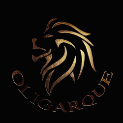

Born in 2017 in Paris, France, Maison Oligarque symbolizes courage and strength.
The lion is a longstanding symbol of Royalty and Nobility. A group of lions is called a pride because of their
regal appearance and mannerism.
Oligarque Fragrances are created by undisclosed French perfumers with natural raw ingredients and quality with
highly concentrated oils in Extrait de parfum.
Sillage and longevity are the primary signatures and familiar faces of Oligarque.
So, make a statement, have no fear, and welcome our Oligarque pride.
-
• Top: Green Apple, Bergamot Zest, Georgia Peach, Star Anise
-
• Middle: Blond Caramel, Warm Milk, Lily Orchid, Cashmere Wood, Labdanum
-
• Base: Madagascar Vanilla, Creamy Sandalwood, Gourmand Tonka Beans, Sexy Musk, Rare Amber
-
• Top: Juicy Clementine, Ambrette Seeds, Exotic Ylang Ylang
-
• Middle: White Tuberose, Solar Orange Blossom, Coconut Milk, Vanilla Beans
-
• Base: Cashmere Wood, Sandalwood, Gourmond Tonka, Gold Patchouli, Sexy Musk.